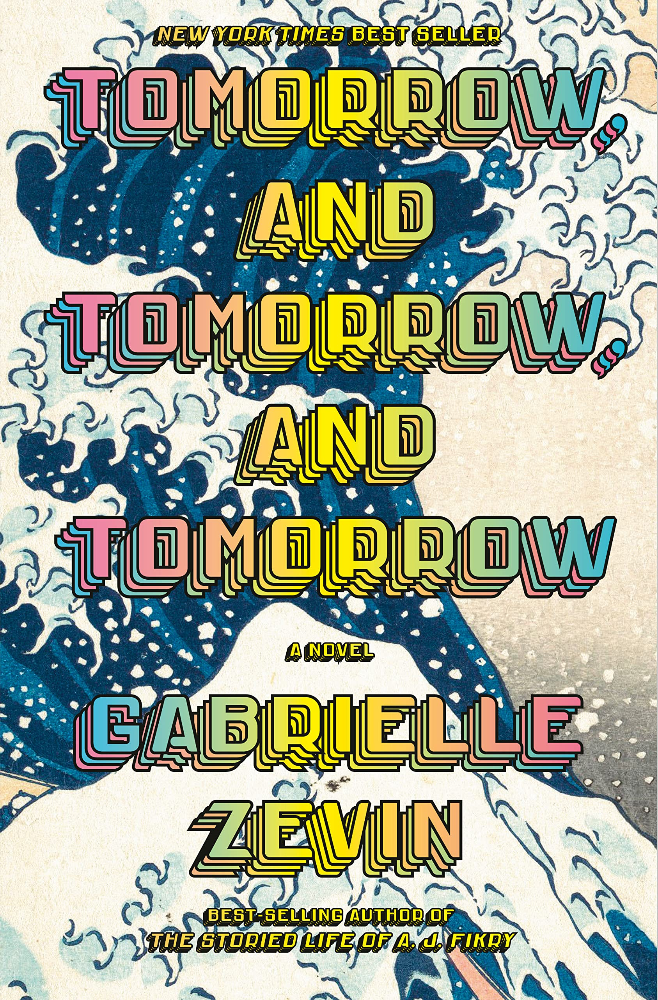

My history with books
I was not a big reader growing up, but by the age of 16-17 I had grown a love for books. Now I am a literal book dragon, who enjoys reading and even with a hectic schedule as a grad student I make sure to find some time to smell the pages of my books. Wherever I have travelled and lived, I've always managed to create a bookshelf. In this picture you can find some books I have loved over the years.
Currently reading
"How often do we call escapism "fun"? That's the real question for me. When I'm looking to define fun in my own life, to figure out how to handle the thing I don't know how to handle or how to process the pain I don't know what to do with, I wonder if I'm actually planning fun or just using fun to describe running away."

“Friendship is friendship, and charity is charity.... the people who give you charity are never your friends. It is not possible to receive charity from a friend.”
“Boomer who, while riding in the car, saw another dog and jumped out the car window while the car was traveling at a fairly high rate of speed. Upon landing, Boomer broke a number of important bones. He had to wear casts during a long and difficult recovery. Finally he healed, and not long after, he was again riding in the moving car, and he saw another dog. With no hesitation whatsoever he jumped out again.”
“Decades before, Zyklon A--a precursor to the poison em- ployed by the Nazis in their concentration camps- -had been sprayed on California oranges, as a pesticide, and used to de- louse the trains in which tens of thousands of Mexican immigrants hid when entering the United States. The wood of the train cars was stained a beautiful blue, the same colbur that car be seen even today on certain bricks at Auschwitz; both hearken to cyanide's authentic origins as a by-product isolated in 1782 from the first modern synthetic pigment, Prussian Blue.”